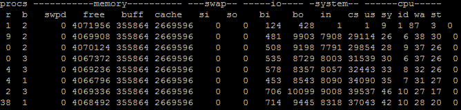
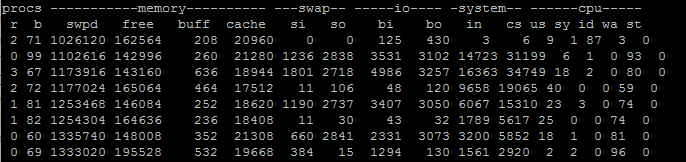

در این نوشته، برخی راهکارهای انجام تنظیمات بهینه دیتابیس Mysql برای استفاده از حافظه مطرح می گردد.
برای بهره گیری بهینه و پایدار از MySql انجام تنظیمات صحیح برای استفاده مناسب از منابع حافظه در دسترس یکی از مهم ترین موارد برای بررسی می باشد. در Mysql 5.7 یکی از اشتباهات رایج عدم تغییر تنظیمات پیش فرض هست که از حجم بسیار پایین حافظه استفاده می کند،می باشد. اما تنظیم ناصحیح آن می تواند کارآیی نامناسب یا حتی کِرَش کردن آن سرویس را در پی داشته باشد.
اولین قانون در تنظیم استفاده حافظه Mysql این است که هیچگاه اجازه ندهید Mysql موجب شود که سیستم عامل از swap استفاده کند چرا که فعالیت اصلی swap می تواند کارآیی Mysql را به صورت چشمگیری کاهش دهد. نکته مهم اینجا کلمه فعالیت است. زمانی که MySql در حال اجرا می باشد، استفاده مقداری از swap به صورت فایل که مربوط به خود سیستم عامل می شود، مشکلی نخواهد داشت. چیزی که نمی خواهیم swap کردن به صورت ثابت در هنگام کار کردن می باشد، همانطور که در فیلدهای si و so خروجی فرمان vmstat قابل رویت است.

مثال: swap متعارف

مثال: swap خیلی سنگین
اگر مقداری بیشتر از 1MB/sec را از حافظه در دسترس، یا فعالیت swap را ثبت کرده اید، باید تنظمیات انجام شده برای حافظه را بازبینی کنید.
تخصیص حافظه در Mysql پیچیده است. بافرهای عمومی، بافرهای قبل از ارتباط (بستگی به میزان بارگزاری در زمان کار دارد)، و برخی تخصیص حافظه کنترل نشده (از قبیل حافظه هایی که داخل استور پروسیجر ها استفاده می شوند)، همگی این ها دست به دست هم داده اند تا انجام محاسبات سخت برای فضای کاری شما را فراهم آورند. بهتر است میزان فضای مورد استفاده از حافظه مجازی مورد استفاده Mysql را مورد بازبینی قرار دهید. این کار را می توانید با فرمان top یا ps به صورت ذیل انجام دهید.
ps aux | grep mysqld
mysql 3939 30.3 53.4 11635184 8748364 ? Sl Apr08 9106:41 /usr/sbin/mysqld
ستون پنجم نشان دهنده میزان استفاده از حافظه مجازی که حدودا ۱۱گیگ می باشد، است.
قابل اشاره است که حافظه مجازی نوعا درحال تغییر می باشد. استفاده از آن به عنوان یک پارامتر در سیستم مانیتورنگ برای آگاه سازی شما در مواقع ضرور ایده خوبی می باشد. اجازه ندهید حافظه مجازی مورد استفاده mysqld از 90% افزایش یابد.
کم کم وقت آن رسیده که با احتیاط کامل شروع به انجام تنظیمات بافر عمومی و بافر قبل ارتباطات کرده، و بعد آنها را آن طور که صلاح می دانید افزایش دهید. خیلی از آن ها از جمله innodb_buffer_pool_size را می توانید به صورت در حال اجرا و از طریق کنسول خود Mysql انجام دهید.
مسئله اصلی این است که باید تصمیم گیری کنید که در مقابل دیگر برنامه های در حال اجرا در سیستم، چه میزان فضای حافظه را باید به Mysql تخصیص داد؟ در بیشتر حالات نباید بیش از 90% حافظه اصلی سیستم به آن تخصیص داد، و مقداری را هم باید برای سیستم عامل و دیگر برنامه ها از قبیل کش فایل های باینری لاگ، فایل های موقت و غیره باقی گذاشت.
حالاتی که Mysql باید کمتر از 90% حافظه را استفاده کند:
- اگر پردازش های مهم دیگر چه به صورت موردی یا مستمر نیز بر روی همان سرور در حال اجرا باشند. اگر برنامه های زمانبندی شده سنگینی دارید که میزان زیادی حافظه را نیاز دارند، باید حساب کنید.
- اگر قصد استفاده از کش سیستم عامل برای موتورهای ذخیره سازی را دارید. با
InnoDB، ما در بیشتر حالات استفاده ازinnodb_flush_method=O_DIRECTرا که موجب می شود از سیستم کش فایلی سیسیتم عامل استفاده نشود راتوصیه می کنیم. به هر حال، مواردی از قبیل بافر I/O هم هست که بر رویInnoDBتأثیر می گذارد. اگر همچنان موتورMyISAMاجرا می کنید، به کش سیستم عامل برای داده های بخشی از جداول نیاز دارید. البته با موتورTokuDBبرای برخی بارگزاری ها اتفاقا استفاده از کش سیستم عامل خوب هست. - اگر کارهای شما درخواست های زیادی داشته، جداول موقت
MyISAMروی دیسک، فایل های مرتب شده، برخی دیگر فایل های مورد نیاز کهMysqlایجاد کرده است را برای کارآیی بهینه به کش سیستم عامل نیاز دارد.
آنچنان که می دانید میزان فضای حافظه مورد نیاز برای کل Mysql چقدر است، باید برای میزان حفاظه مورد نیاز داخلی آن نیز برنامه داشته باشید. اولین بخش استفاده از حافظه در Mysql مربوط به بارگزاری فضای کاری می باشد - اگر شما ارتباطات فعال همزمان بسیار زیاد که select های سنگینی که حافظه زیادی برای مرتب سازی یا جداول موقت، نیاز داشته باشند، پس شما به حافظه بسیار زیادی نیاز دارید(خصوصا اگر Performance Schema فعال باشد). در حالات دیگر این حجم از حافظه کم است. پس شما برای این منظور به طور کلی یه چیزی بین ۱ تا ۱۰گیگ لازم دارید.
از جمله دیگر مواردی که باید برای آن فکری شود، تکه تکه شدن حافظه است. این مهم بستگی به کتابخانه تخصیص حافظه ای (glibc, TCMalloc, jemalloc, etc.) دارد که استفاده می کنید، تنظیمات سیستم عامل از قبیل Transparent Huge Pages (THP) و فضای کاری شاید نشان دهنده افزایش استفاده از حافظه به مرور زمان است (تا زمانی که به وضعیت ثبات برسد). می توان 10% برای تکه تکه شدن حافظه حساب باز کرد و بیشتر از آن استفاده مورد نیاز است.
در پایان هم، نوبت به بافرهای عمومی و کش ها می رسد. نوعا، تنها نگرانی شما باید به خاطر innodb_buffer_pool_size باشد. اما باید پارامترهای key_buffer_size، tokudb_cache_size، query_cache_size را هم به خوبی لحاظ کنید. این پارامترها بر روی تخصیص حافظه کلی تأثیر گزار هستند، هر چند که آنها در واحد بایت محاسبه نشوند.Performance _Schema ممکن است حافظه بسیار زیادی را اشغال کند، به ویژه اگر تعداد بسیار زیادی از ارتباطات یا جداول را داشته باشید.
زمانی که اندازه بافرها و کش ها را تعیین می کنید باید دقیقا بدانید که در حال مشخص کردن چه چیزهایی هستید. برای innodb_buffer_pool_size به خاطر داشته باشید که 5 تا 10% از حفاظه را برای ساختار داده های دیگر بوده و اگر از فشرده سازی استفاده کرده و یا مقدار innodb_page_size را کمتر از 16K قرار دهید، این عدد بزرگتر می شود. برای tokudb_cache_size، خیلی مهم است که به خاطر داشته باشید که تنظیمات یک راهنما است، نه یک محدودیت: اندازه کش می تواند اندکی بالاتر از آن چه که تعریف شده است پیش روی کند.
برای سیستم های با حجم حافظه بالا، کش دیتابیس به اندازه مصرف مورد نیاز آن افزایش پیدا می کند، و شما بیشترین فضای ممکن را در اختیار آن قرار داده اید. زمانی که شما حافظه سیستم را افزایش می دهید، به این معنا است که اندازه کش دیتابیس را افزایش داده اید.
اجازه بدید تا با یک مثال ادامه دهیم. فرض کنید که سیستمی هست با 16 گیگ حافظه که بر روی آن فقط برنامه Mysql با موتور ذخیره سازی InnoDB با پارامتر innodb_flush_method=O_DIRECT در حال اجرا می باشد، که ما می توانیم 90% (یا 14.4 گیگ) از حافظه را به Mysql تخصیص دهیم. برای فضای کاری، ما فرض می کنیم که مدیریت ارتباطات و دیگر سربارهای مبنی بر اراتباطات روی Mysql نهایتا 1گیگ نیاز داشته (13.4 گیگ رها می شود). مقدار 0.4 گیگ را هم فرض می کنیم که برای مصارف عمومی از قبیل ( innodb_log_buffer_size، کش جداول, دیگر نیاز ها) استفاده شده، پس فضای یاقی مانده 13 گیگ می باشد. نظر به 5 تا 7% سرباری که استخر بافر InnoDB داشته، به دلیل انجام مشهود تنظیمات innodb_buffer_pool_size=12G می باشد، مقداری که معمولا با میزان حافظه 16گیگ به خوبی عمل می کند.
اکنون که تنظیمات استفاده از حافظه برای Mysql انجام شد، باید تنظیمات سیستم عامل را هم یک بررسی داشته باشیم. اولین سوالی که پرسیده می شود این است که اگر می خواهیم که Mysql از swap استفاده نکند، آیا باید این امکان فعال باشد؟ برای بیشتر حالات پاسخ مثبت است - این امکان (حداقل با ۴گیگ و کمتر از 25% حافظه نصب شده نباشد) به دو دلیل خوب است که فعال باشد:
- برخی برنامه های سیستم عامل مثل دیتابیس سرور هستند که تا زمانی که استفاده نشوند از حافظه استفاده نمی کنند. پس بهتر است تا این گونه برنامه ها به جای نگهداری و اشغال حافظه رم، در swap نگهداری شوند.
- اگر در تنظیمات
Mysqlدچار اشتباه شده یا تعدادی پردازش اضافه از میزان فضای پیش بینی شده، بیشتر استفاده کند، این هم موقعیت خوبی هست تا این گونه برنامه را نیز برای آزاد سازی فضای حافظه رم، آن ها را در swap نگهداری کرد
با در نظر گرفتن این که ما قصد استفاده از swap را برای زمانی داریم که حافظه کافی وجود نداشته و یا پردازش هایی که کاری انجام نمی دهند را داریم، پس می توان میزان درصد استفاده از آن را برای سیستم عامل کاهش داد.
echo 1 > /proc/sys/vm/swappiness
بدون این تنظیمات، ممکن است سیستم عامل موجب swap شدن Mysql شود به این دلیل که از نظر سیستم عامل آن نیاز به کش کردن میزان زیادتری فایل دارند (که البته این انتخابی اشتباه برای Mysql است).
مورد بعدی زمانی است که تنظیمات سیستم عامل نابود کننده خطای Out Of Memory است. ممکن است در فایل لاگ کرنل پیامی مثل پیام زیر را مشاهده نمایید:
Apr 24 02:43:18 db01 kernel: Out of memory: Kill process 22211 (mysqld) score 986 or sacrifice child
زمانی که خود Mysql دچار خطا شود، تنها کار منطقی خارج کردن آنها از حافظه است. هر چند که، این مشکل واقعی به علت یکی از فعالیت های خود شمااست: اسکریپت ها، پشتیبان ها و غیره. در این حالت، ممکن است که بخواهید آن پردازش را خارج کنید اگر سیستم حافظه کافی به جای Mysql نداشته باشد.
به منظور کاهش اولیت برنامه Mysql در سرویس OOM Killer می توانید به ترتیب زیر عمل کنید:
echo '-800' > /proc/$(pidof mysqld)/oom_score_adj
این تنظم باعث می شود تا کرنل لینوکس برای خارج کردن برنامه هایی که بیشتر حافظه مصرف می کنند بهتر تصمیم گیری کند.
در پایان بر روی یک سیستم با بیش از یک هسته CPU، بهتر است که درباره NUMA زمانی که برای تخصیص حافظه Mysql بیشتر مراقب باشید. در نسخه های جدید Mysql، می توانید تنظیم زیر را انجام دهید:
innodb_numa_interleave=1
در نسخه های قدیمی می توانید به صورت دستی و با اجرای فرمان زیر قبل از اجرای سرویس Mysql اجرا می شود:
numactl --interleave=all
یا از تنظیمات numa_interleave در سرور Percona استفاده نمایید.